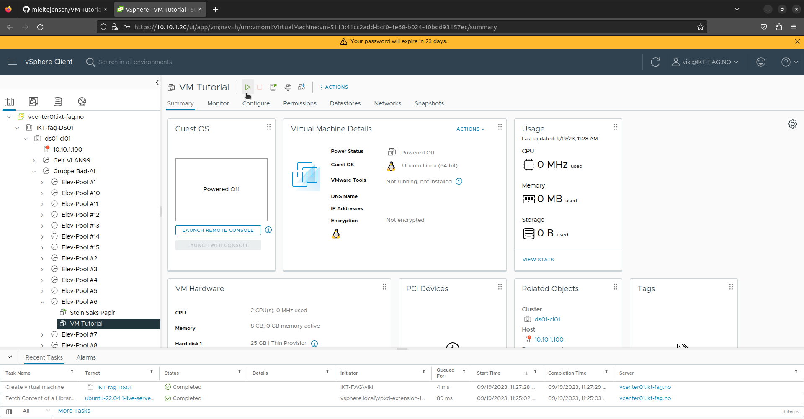

Her skal du lære å sette opp din egen Ubuntu VM(Virtual Machine) med apache2.
Apache2 lar deg hoste nettsider fra maskinen.
Skriv inn "10.10.1.20" i nettleseren din så kommer du til VM center. Trykk på "Launch Vsphere Client" og logg inn.
Her må du finne fram til din "pool".

Så høyreklikker du å tryker på "New Virtual Machine".
Velg "Create a new virtual machine" og trykk "next".

Skriv et valgfritt navn til din VM og trykk "next".
Velg din egen "pool" og trykke "next".
Kryss av "IKT-fag" og trykk "next".

Velg "ESXI 8.0" og trykk "next".

Velg Linux "Family OS" og velg Ubuntu 64-bit.

Velg 8 GB "Memory".
Trykk deg inn i "New hard disk" og velg "Thin Provision".
Trykk deg inn i "New CD/DVD Drive" og velg "Content Library ISO File".
Skru på "Connect At Power On". Så trykker du på "Browse" på CD/DVD Media.
Her velger du "Ubuntu-22.04.1-live-server-amd64", så trykker du "ok" og "next"
Her er det bare en oppsumering, det er bare å trykke "Finish"
